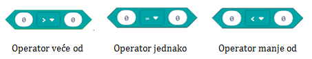
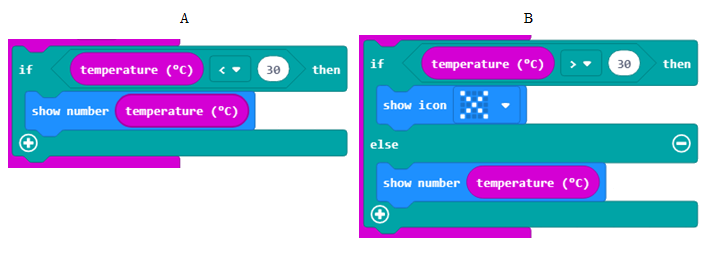

Rad sa blokovima iz kategorija Logic¶
Programi koje smo do sada stvorili izvršavali su se blok po blok, od prvog do posljednjeg bloka. Ova vrsta izvođenja programa naziva se sekvencijalno. U sekvencijalnom (linijskom) izvršavanju ne postoje blokovi za preskakanje (izostavljanje). Svi se izvršavaju jednom (ako su u bloku  ) ili više puta (kada su u bloku
) ili više puta (kada su u bloku  ).
).
Međutim, može se dogoditi da zadatak koji rješavate zahtijeva promjenu načina na koji se program izvodi.
Na primjer, ako kreirate program koji će mlađi učenici koristiti za učenje brojanja (aritmetike), poželjet ćete izvršiti određene blokove koji hvale točan odgovor ili izvršiti potpuno drugačije blokove koji komentiraju pogrešan odgovor.
Na temelju odluke o točnosti ili netočnosti odgovora, morat ćete izvršiti različite blokove. Zato kažemo da se program grana, tj. da se blokovi jedne grane izvršavaju dok se blokovi druge grane ne izvršavaju.
Odlučujete svakodnevno i na temelju njih nastavljate svakodnevne aktivnosti. Na primjer, učionica je 30 Celzijevih stupnjeva i želite uključiti klimu. Sljedeći je korak provjera sobne temperature i odlučiti želite li uključiti klima uređaj ili ne.
Slično je i u programiranju.
Što se tiče odlučivanja, MakeCode nudi:

operatori za usporedbu
blokovi odlučivanja (programi grananja)
Pomoću operatora za usporedbu možete usporediti vrijednosti i odrediti je li jedna veća / manja od druge ili su jednake. Rezultat usporedbe može biti TOČNO ili NETOČNO.
- Kao rezultat izvršavanja bloka A, program će prikazati vrijednost sobne temperature.
- Odgovor nije točan!
- Izvođenje blokova A i B dobit će isti rezultat - program će ispisati temperaturu u sobi.
- Odgovor je točan!
- Kao rezultat izvršavanja Bloka B, program će prikazati križ.
- Odgovor nije točan!
Q-8: Sobna temperatura je 28 Celzijevih stupnjeva. Analizirajte blokove na slici i označite ispravnu tvrdnju.
Programirajmo!
Pred vama je izazov: ako je nasumično odabrani broj (od intervala 0 do 100) parni broj, trebali biste prikazati tekst “Broj je paran.”, A ako je broj neparan broj, trebao bi prikazati tekst “Broj je neparan.”.
Kada je broj paran i kada neparan? Ako cijeli broj podijelimo s brojem 2 bez ostatka, tada smo sasvim sigurni da je taj broj paran. Ako imamo ostatak 1 u cijeloj podjeli, tada znamo da je broj neparan.
Na primjer, ako podijelimo s 10 cijeli broj 2, rezultat je 5, jer 5 * 2 je 10. Ali ako je cijeli broj 9 djeljiv sa 2, dobivamo 4. 4 * 2 je 8, a imamo ostatak 1. Na temelju toga možemo zaključiti da ako nema cijelog broja u cijelom djeljenom sa 2, tada je broj paran. Inače je broj neparan.
Djelovanjem cijelog broja možete u MakeCode napisati pomoću operacije  , dok ostatak prilikom dijeljenja pomoću bloka
, dok ostatak prilikom dijeljenja pomoću bloka  , što daje vrijednost u ostatku dijeljenja.
, što daje vrijednost u ostatku dijeljenja.
Na temelju prethodne lekcije, definiramo varijablu Broj koja pohranjujes vrijednost dobivenu blokom  , točnije varijabla
, točnije varijabla Broj dobija jednu od slučajnih vrijednosti iz intervala od 0 do 100.
Sljedeći korak je provjera da nema ostatka u cjelobrojnoj podjeli broja s dva. Ako je istina da nema ostatka, prikazat ćemo poruku “Broj je paran.” U suprotnom, ako uvjet nije ispunjen, točnije postoji ostatak u podjeli koji nije jednak nuli, prikazat ćemo poruku “Broj je neparan.”
Prije provjere uvjeta, moramo stvoriti varijablu Ostatak, i dodijeliti vrijednost cjelobrojne podjele broj i broj 2:

Sljedeći korak je provjeriti je li broj paran ili ne? To radimo uvođenjem bloka if....then... else i operatora usporedbe. Ako je preostala varijabla 0, broj je paran, a poruka “Broj je paran.” Inače, ako ostatak nije 0, broj je neparan i poruka “Broj je neparan”.

Konačni izgled koda:
Kod možete pogledati i na linku: https://makecode.microbit.org/_WDmbuk3kKXW5
Da bismo testirali program, pokrećemo ga u simulatoru klikom na gumb  .
.
Zadatak: Napravite program koji simulira bacanje kockica. Ako je tijekom bacanja odabran broj 1 (registracija pokreta - shake), trebao bi biti predstavljen jednom točkom, ako je odabran broj 2, prikazuju se dvije točke i tako dalje.
Usporedite rješenje s našim: https://makecode.microbit.org/_HsxKqAC90d5m
Dodatak: Za povezivanje uvjeta mogu se koristiti logički (Bul) operateri. U MakeCode-u su logički operatori prikazani na sljedeći način.
In MakeCode, logical operators are presented as follows:
 - Povezuje dva uvjeta, i kao rezultat vraća Točno ako su oba uvjeta Točna.
- Povezuje dva uvjeta, i kao rezultat vraća Točno ako su oba uvjeta Točna.
 - Povezuje dva uvjeta, i kao rezultat vraća Točno ako je barem jedan uvjet Točan.
- Povezuje dva uvjeta, i kao rezultat vraća Točno ako je barem jedan uvjet Točan.
 - Stavlja se ispred jednog uvjeta, i kao rezultat vraća Točno u slučaju da uvjet nije zadovoljen.
- Stavlja se ispred jednog uvjeta, i kao rezultat vraća Točno u slučaju da uvjet nije zadovoljen.
Uvjet za provjeru da li je izmjerena temperatura viša od 28 i razina osvjetljenja viša od 130 (razina svjetlosti bloka) koristimo ovaj blok: